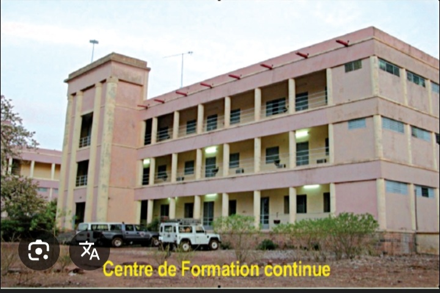

L’Institut Polytechnique Rurale de Formation et de Recherche Appliquée (IPR /IFRA)
Accessible aux bacheliers de séries : TSE, TSEXP, TSECO, CF, CG, GC
Les filières de formation Licence :
- Licence Agriculture Vivrière et Durable (LAD)
- Licence Aménagement Hydro Agricole (AHA)
- Licence Aménagement et Gestion des Ressources Forestière et Faunique (LAGRF)
- Licence Halieutique et Aquaculture (LHAQ)
- Licence Machinisme Agricole et Agroéquipements (LMA)
- Licence en Agroéconomie
- Licence en Agro-business
- Licence en Agro-business
- Licence Vulgarisation Agricole (LVA)
Les filières de formation Master :
- Master Agroéconomie
- Master Aménagement Hydro-Agricole
- Master Gestion intégrée de la Fertilité du sol (MGIFS)
- Master en Agroforesterie et Gestion des Ressources Naturelles